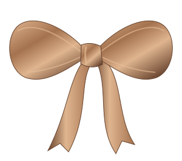

DEA / MY ACHIEVEMENT ALBUM
Cerita baik,
tersimpan di sini.
Ruang untuk menyimpan dokumentasi dan sertifikat perjalananku.

Menyiapkan album…
Lembar baru sedang menunggu.
Dokumentasi akan tampil di sini setelah foto prestasi ditambahkan.